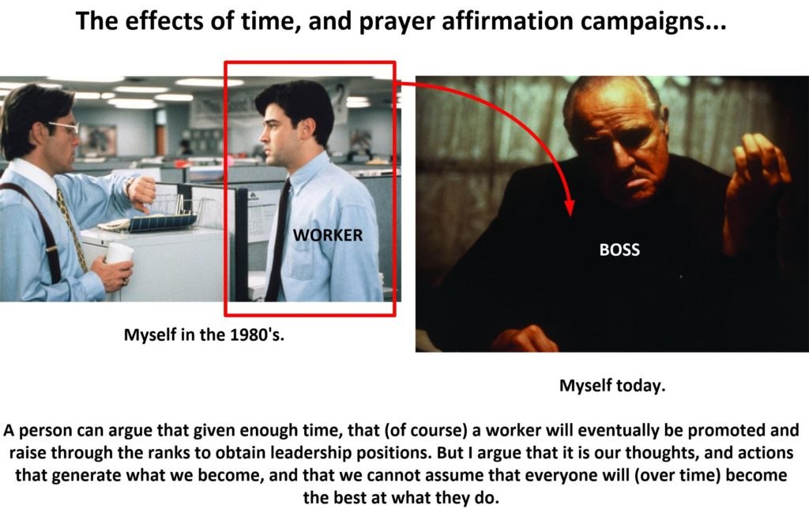
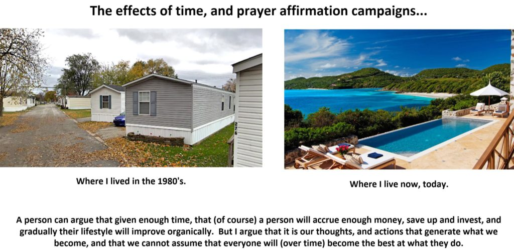
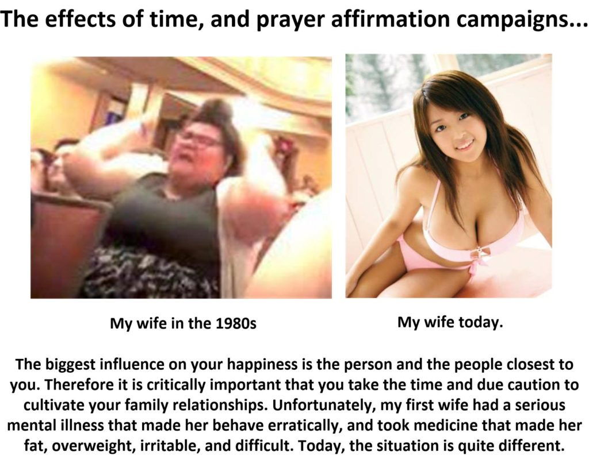
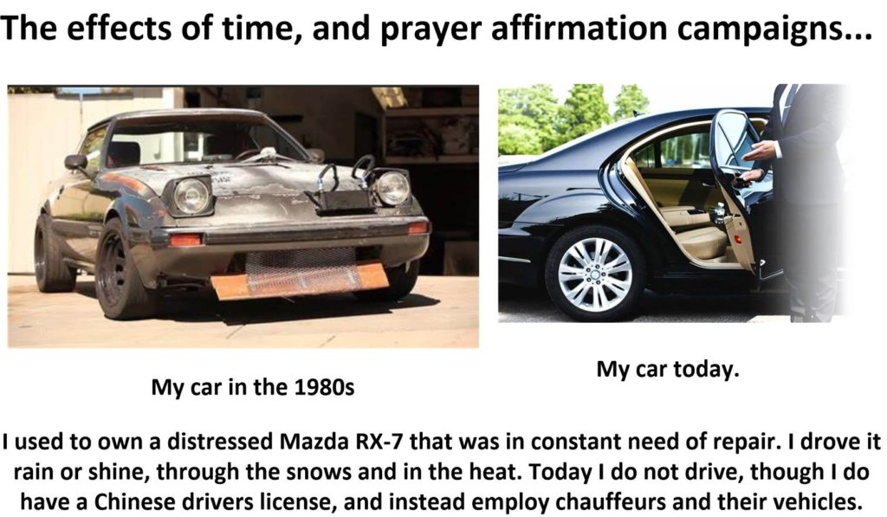
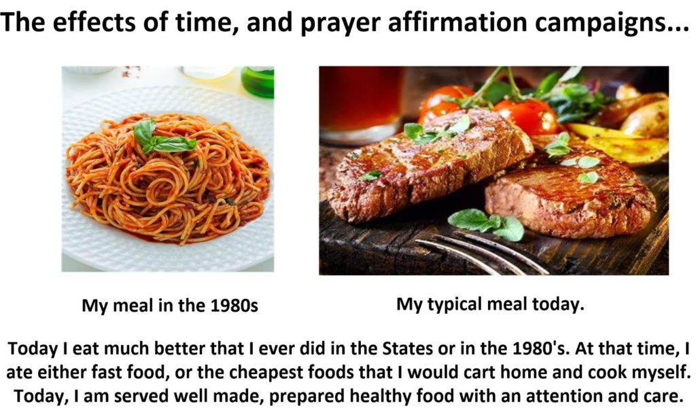
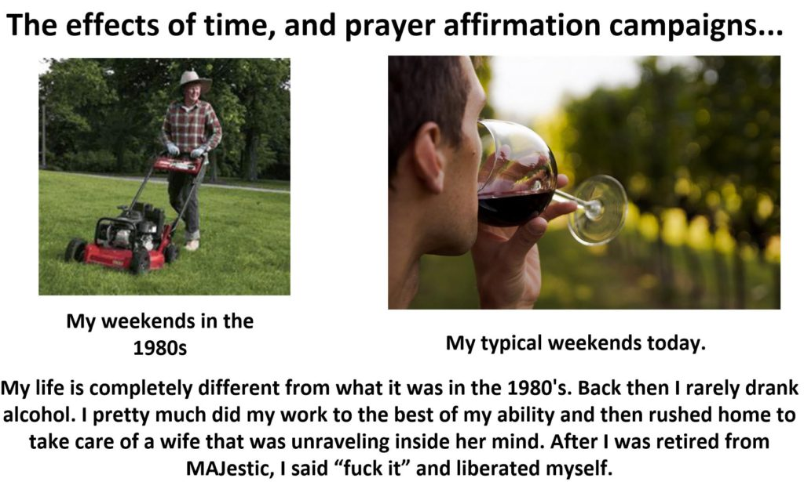

Oh boy! Buckle up!
One of my friends, in casual conversation, asked me (while talking about prayer campaigns and affirmations) what all the changes were like, for me, after over four decades of prayer / affirmation campaigns.
And I read what she asked of me, and I’ll tell you truthfully, I just leaned back in my chair and stared dumb-founded at the screen. Oh, yes. Things have really changed. They really, really, REALLY have changed. I just never really thought about it that way.
But… yeah.
And yeah…
It’s complicated.
Our experiences change us. My role in MAJestic changed me. My relationships with others changed me. The culture sand society changed me, and all kinds of influences shaped my life. And if you take one such influence out, I would be a completely different person.
Life changes you.
And, I’ll tell you what, four decades of life is gonna change you.
It’s one thing to live life, and sway in the wind, guideless and directionless. Like some clothing hung on a clothes line to dry. But it’s another thing to pilot an ocean steamer, blind in the dark, dark night trying to make it to paradise.
Since I left the Navy, and entered MAJestic, my entire life has been that of directed prayer / thought / affirmations and intention.
In fact, what I am trying to say is that without the prayer / affirmation campaigns I would not have had so many changes. Without my role in MAJestic, I wouldn’t have been exposed to so many things, ideas and changes. And all things taken together as a whole, I have to admit… life, and experiences are all intertwined with affirmation campaigns.
Do. Not. Assume.
That.
I. Would. Be.
What. I. Am. Today.
Without. Prayer. Campaigns.
Don’t make that assumption. It’s a foolish and stupid assumption. I attribute my material wealth, the quality and quantity of life, and my experiences are all a direct result of my personal prayer affirmations that I have conducted for over four decades.
My current life, and lifestyle is the direct result of my prayer affirmation campaigns.
For Starters
Let’s begin with answering the question.
What changes do I have in my life right now, compared to the life that I had in the 1980's?
Well, since I started the affirmation campaigns in the late 1980’s. We will begin there. Let’s use the starting point where it’s a few years after my calibration and training at China Lake NWC outside of Ridgecrest, California.
At that time, I had left the Navy and MAJestic told me to “make a living and live life”, and so I found work in an automotive electronics company in central Indiana.
So we will use that as the initial baseline. We will refer to that period of time, say middle to late 1980’s as the comparison subject. And on the other end, we will compare it to my life, right now today.
The differences are stark. And i have never really thought about things in that way. So it kind of took me back a little.
So thinking about all this, I ended up pausing. Contemplating.
At which point, I made this little picture…

Indeed, you just cannot assume that every single office dweeb that working in the monstrosity work environments of the 1980’s are now big powerful bosses. You just cannot say that this is what happens, that everyone follows a career and that they naturally rise up. It’s been my personal experience that I was the outlier.
My co-workers from those days pretty much “bailed out” of that environment after maybe four or five job layoffs. Many are now retired or wrapping up their own (much smaller) self-employed businesses, or are running consultancies, or teaching. Very, very few are as “successful” as I am.
As if “success” is a universally understood concept.
Everyone is different, and life has a way of grabbing you “by the balls” and give you “a few knocks in the head”, in order to “straighten you out”. And as a result, you end up changing. You become a different person.
I like to think that many of my former co-workers are doing well. They are certainly doing and living life different than I am. But one man’s ideal, might be another man’s nightmare.
Who’s to say that my life is “better” than theirs are?
You cannot.
Instead, you have to judge “success” on the basis of the individual. AND STOP COMPARING yourself to others. Instead, we will compare myself to myself. And if we do that, we can see the relationship that time, and intention has over my own personal life. And that, my friends, might be illustrative… and I hope… inspiring.
You should be able to see things…
You should be able to see that my overall attitude is quite different. The feelings of helplessness compared to the feelings of raw power that I hold today are beyond compare. But it is more than that. Much more.
There used to be a song (in the 1970’s), and while I have long since forgotten the name of the song and who sang it, the lyrics went something like this…
"Life is what you make it... ...if you can take it... ...you don't have to break it... ...life is what you make it."
Well…
Is my life “better” than it was four decades ago in the 1980’s working in the States? Am I living a fantastic life? How does my life compare now? Can it be attributed to intention prayer campaigns, or to something else? Like coincidence?
First off, let’s see if my life can be judged as a “success” compared to what it was four decades ago. But, we have a problem. What actually is “success”?
Judging by money and wealth
If you judge a man, or anyone, or me (even) by the amount of money that I have then I would be classified as a failure. I have restructured my life so that I do not have any money, nor savings accounts, nor credit accounts, nor any tangible means to equate personal value with my monetary wealth.
- No bank accounts.
- No legal ownership papers in my name.
- No “paper trail” of employment.
- No credit rating.
An investigator would find me a very boring subject. I don’t have anything. And that includes money. So under these terms, I would be classified as an abject failure. This is absolute, in those specific terms.
Of course, Heh heh, what do you all think an ex-spook would look like? You think that we would be on the grid, and monitored like some kind of common criminal, felon or hoodlum.
Judging by number of children
Some people view success as the ability to father the most children as possible during their lifetime.
I have met many ethnic youth in America, and some SA’s that feel this way. They talk about their “baby mama” and how they have 12, 14, or 16 of them. This single unemployed African American man impregnating 16 women, but not being a father to any children. Some people define that as success.
I don’t.
But if you did, then the king of this effort would be Genghis Khan.
- Genghis Khan DNA & Descendants | How Many Kids Did …
- “Super Father” Genghis Khan has up to 16 million male …
- How many children did Genghis Khan really have?
- What did Genghis Khan use to enable him to father so many …
- Genghis khan children number – Italia Magazine
And yet again, I would be considered a failure by those lofty standards. There’s a very precious few metallic-babies walking round in this world today. And I for one, think of this as a good thing. I’m not a mass-production baby-making factory. Don’t you know.
I do not have a long train of children crying for their daddy, or a a zillion courts demanding the garnishment of my pay checks.
I think that it is a good thing, but other people might not consider this a “successful” life.
Judging by appearance
Some people, most especially those in the 20’s judge others by appearance. If you are attractive, or cart around an attractive wife (or two) on your arm, and drive a nice expensive car, and wear the most stylish and trendy clothes, you are considered to be successful.
I know how it works.
And then you have a kid, and your priorities change. Or you get locked into a career, and things change further. Or, that you start having obligations, and your children need braces, school books and they want a pony. Oh, it is amazing how these criteria change so rapidly.
Yah. Well, but these criteria I too would still be considered a failure.
I dress fine, and wear nice comfortable clothing, but I don’t own or drive a Ferrari. In fact, my days of driving a care are pretty much sunsetted. Let others deal with the headaches, and the hassles. Just take me where I need to be, and be done with it, Sir.
Truthfully, I happen to like being driven around by my driver, and I really don’t care what people think about the car that I am riding in. As long as it is big and roomy and fits my personality, I am fine with it. I like the door being opened for me, and the driver and my aides buckling me in. I like it when they say “you can take a nap, sir, it’s going to be a couple of hours”. And I like it when we arrive at the destination and they stand outside ready for my calling.
Now, it's true that a Maybach is certainly something that I would enjoy riding in, but the price tag is not something that I believe is worthy of consideration.
Yet, to others, judging by this kind of criteria, I do not appear to be a very successful and wealthy businessman. I don’t have fine expensive sports cars to flaunt and to rev up the engines with.
Judging by physical attribute
Many, many people judge others by their appearances. And while I just covered the appearance of wealthy people, here, we can talk about physical beauty and their attractiveness towards the opposite sex.
Physical appearance.
For women it might be big boobs, Big hair, Big ass, or long legs, long silky hair, clear complexion, or a naturally curvy backside. And, for men it might be a big dick, a full set of hair, impressive pecks or something else… like a enormous wallet.
All this is silly.
By these criteria, I’m just so-so. I am average. Pretty much.
Now, truthfully, if I were to improve my appearance it would be to slim down my waist some, clean up some of my wrinkles and thicken my hair a tad. There are a precious few people who are completely satisfied with their appearances, and there are entire product segments that capitalize on this fact.
I wouldn’t touch my penis. It’s big enough, thank you. I want to be comfortable with myself. And when I am, I am naturally happy and light, and I radiate.
This is real and true attractiveness.
I strongly believe that if you take care of your body. Fill it with fine delicious food, smile and laugh a lot and ignore the sad, doom and gloom others that surround us, that you will do fine. Just be clean, and if that means taking three showers a day, then do it. A happy, scrubbed clean, cheerful person who is open and friendly is amazingly attractive to a wide range of people.
But, you know…
Since there are so many things that are desirous of improvement, you could also say that I am pretty much a failure in those areas. I am not the most handsome man in the world. I’m just an older man. And I pretty much live that role.
Judging by experience
Ah. Now this is something that I am proud to say that I am worthy of judgement. Few people have experienced the wide ranging and comprehensive diversity of experiences that I have had. Very few. Perhaps Sebastian has.
And there is so much more open to experience…!
And I argue that this is a good thing. As the more experiences that you have, the more quantum associations you make. And thus the more quantum bonds and entanglements, the more you grow.
Ah…
But it doesn’t make for “good television” or movies. Don’t you know.
So what’s the deal?
Indeed. So what is “the deal”?
Well, you are not in competition with anyone. So there is no need to be or become “the best”.
What you want is a suitable, and comfortable life that fits YOUR personality, not that which is provided to you via the American media.
And. That. Is. It.
- Do not use the media as a yardstick for success.
- Your goal should be to be the best you as possible, and live the life that you deem fit.
You need to find out what you like, and the kind of life that holds meaning for you, and then you need to set your prayer campaign in motion to obtain those goals and objectives. And for me, I am very sad to say, that this understanding and realization did not occur immediately. It developed over time.
Ugh. And what you see now is not the pristine result of four decades of planning and implementation, but rather the result of a back and forth, mish mash, of attempts and direction-seeking prayer / affirmation campaigns trying to discern the best fit lifestyle for myself to adopt.
But, all in all, I think that I’m pretty darn close.
Let’s look at the changes the affirmation campaigns have brought about.
Well, right off the bat, you have seen the differences in my work / career. It’s pretty dramatic, I’ll tell you what. I studied to become an astronaut, trained as a Naval Aviator, worked as an engineer, lived as a hobo, toiled in prison, and now am a Boss out of necessity.
Life can have many twists and turns, don’t you think?
Living Environment
Let’s start with the house and living environment.
Back in the late 1980’s, I was working as an engineer inside a massive electronics corporation, owned by GM, and modeled after the work environments in Silicon Valley. They constructed these facilities in the middle of nowhere; Kokomo, Indian and all the top tier of management snagged up all the housing. I ended up living in a mobile home in a flat (former) soybean field.
Think of a mobile home on the tundra wastes in Alaska. That is what it was like. Though in the Spring and Fall, it was pretty lovely.
Today, I live in a big house off the beach. I can watch the people walk their dogs and play on the beach from my living room window, and my neighborhood is nice, and friendly.
So you might want to say that in comparison, it is sort of like this… (I will not use actual pictures of my personal life in this post. I do hope that you all understand.)

Yeah, it’s a bit of a change.
Do you all think that it is luck? Or that I somehow managed to eventually save my way to my current lifestyle though scrimping and saving, or through the stock market, or a “big break”? Eh?
Let’s compare companions
Oh. Now, none of these pictures that I am using is of MM’s personal life. I don’t have any pictures of my life in the 1980’s, and I sure as Hell aren’t gonna provide pictures of my current home and personal shit.
But, for the most part the pictures are accurate and are designed to give the proper IMPRESSION of the changes that I have personally experienced as a result of my life and four decades of affirmation and prayer campaigns.
And now, let’s talk about my wife; my companion.
You know, the BIGGEST influence in your happiness, your success in life, and you ability to be happy is your spouse. It’s true and I do believe it.
To understand the differences between then and now, you need to understand the ladies that I was with. And while today, my current wife is beautiful, stacked, tough as nails, but sweet as a kitten, and a strong powerful mother, my wife from the 1980’s was almost the exact opposite.
At that time, in the 1980’s my wife ( a lovely and attractive lass when I married her ) was just starting to lose her mind. Literally, not figuratively. She had an inherited mental illness known as Schizophrenia. It’s a pretty horrible illness, and at that time it was just starting to manifest, and it hit her hard. Really, really hard.
She was incapable of normal life, and started to behave very strangely. She started to hear “messages” in the radio and the television. She started to obsess about events that took place when she was seven years old, and she started performing all sorts of odd and crazy rituals. Her mannerisms changed. Her actions changed. The way she spoke changed, and her interactions with others began a near immediate down-hill side. She was impossible to take around anyone.
And so for personal tranquility, we stayed at home most of the time.

At that time, she started to get counseling, and the doctors prescribed some medication for her to take.
The medicine worked, but ended up causing certain side effects. One of which was that she gained an enormous amount of weight, became very lethargic, and would just spend the entire day sitting around doing absolutely nothing. Then out of the blue, she would become enraged and passionate. And it was absolutely maddening.
After an entire night of dealing with this madness, I would have to drag myself to work and deal with a true-to-life scene from the movie “Office Space”. It was horrible, and absolutely not enjoyable.
- Nightime = caretaker for a mentally ill person.
- Daytime = Worker drone right out of the “Office Space” movie.
When I would return home, I would need to clean up her messes (she would destroy things, break things, and became completely incapable of normal activity. Like throwing the chicken bones from KTC on the living room rug when she was through eating, or never taking a shower or brushing her teeth.), then I would make dinner for both of us, and try to act as her counselor to help her sort out her near-constant distress and emotional turmoil.
Times change…
We divorced, she managed to control her illness somewhat, and last I heard she was doing fine.
And me, today I am happily married to a beautiful Chinese gal, and she is normal and healthy and wholly functional. Praise the Lord!

Time changes everything.
Where I am today is a direct result of my prayer affirmations. Listen to me. I tell you this two times. Where my life is today is the direct result of my various prayer affirmation campaigns.
Let’s compare automobiles
This is pretty easy, but it didn’t work out as planned. But it all manifested when I started to concentrate on the end result of my desire. Not so much on the details. And as a result, an amazing thing happened…
Today I do not drive.
I have contemplated buying a car, and it is on the family table as a discussion item, but we have held back. There are numerous reasons for that, but mostly its that the local public and private transportation avenues are so well established and cheap where we live in China, there just isn’t a serious need to get a car. Though, it would be nice to have one to go outside of the community, and we are contemplating it as a future option. But right now, nah.
Instead, right now, I employ private drivers. I have them on retainer that stand by for me and drive me here and there (as a chauffeur). When I am elsewhere on travel, and not with my driver, I will if necessary, use DD or ShaoJiu which are Chinese equivalents of Uber.
Back in the day, of course, I had my own car. And at that particular point of time in my life, I drove a distressed Mazda RX-7. It was a good little car, but every month I was out in the cold or the heat trying to fix one thing or the other. A few years later, I bought a brand new car to replace it and my life changed accordingly. But right now we are talking about then compared to now, and it looked a little something like this…

Let’s compare meals
You can really see the differences in what I ate then, compared to what I eat now. Back then I ate a lot of simple foods that were cheap and easy to prepare. Much of our budget went into paying medical bills, as my wife at that time was very prone to call 9-11 and have an ambulance take her to the hospital because “she didn’t feel right”.
Breakfasts were mostly cereals with milk, and a drive through coffee and breakfast sandwich. Lunches were a drive through burger meal. I would often mix it up between McDonald’s, Burger King, and Wendy’s.) And dinners were either spaghetti, hamburgers, hotdogs, a tuna salad, a can of Campbell’s tomato (or chicken noodle) soup or chicken wings. Simple and plain, easy to make, American meals. Often the sides would come from a can. Canned corn. Canned peas. Canned beans. Canned spinach. We would eat salads. But fruit were pretty rare in our household. We would buy bananas maybe once a month.
Like I said, my wife was sick. I did all the cooking, and I was exhausted after dealing with my career and work. Only to come home to a house that looked like an army of five year olds played in it, and an out-of-control wife that was raging about something or another that she watched on television.
Today, things are quite different.
I tend to eat really well.
My wife does all the cooking, and every meal is planned and cooked by her. We go out numerous times during the week for a much more extensive meal which tends to be steaks, seafood, or specialty Chinese dishes.
And of course, there are always exceptions. There are days where I need to get something outside, or make up something myself. It's called "reality".
Today, my typical breakfast is usually a bean porridge, rice congiee, toasted Italian baguette, eggs and sausage and, of course coffee. Lunch tends to be the biggest meal of the day and it is a multi-dish affair with meats and vegetables. Dinner (supper) is slightly smaller. The difference is that I have a few beers during lunches, and my wine or VSOP at dinner.
When I am on travel, of course, I eat like a real King.

Let’s compare weekend recreation
This is also a big change, and again, doesn’t look like anything that I could have ever planned for. Back in the 1980’s my weekends were so damn predictable. We would go out for a breakfast in a diner, the highlight of the weekend might be a hike in a state forest, and I would spend most of the weekend tending to the things around the house. I would mow the grass, repair things, like the porches or windows, and of course, fix the perpetually broken car.
Today, I have a very relaxed lifestyle. We go out, walk a lot and enjoy nature. We eat really well. It might be boring to others, but lazing by the beach and chilling with a glass of wine in my hand is what I like to do.

This is not instragram
No it isn’t. This is real life.
But if I show you the pictures of my real life, it will just look “normal” and “everyday”. My life doesn’t look anywhere near as exciting and glamorous as Hollywood and social media makes out an “ideal” life to be.
I could have easily enough pulled off some amazing photos from the internet, pointed at them and said “this is me, and this Lamborghini is my car, and this beautiful instragram beauty is my wife”. But I didn’t.
Do not ever be under the impression that I have an “ideal ” life (what ever the fuck that means).
I have plusses and minuses in my life, just like every other person in this world. Just like you (the reader) does. And yes, just like you, there are things that I want to change, and things that I want to improve upon. And yes, I do maintain active affirmation / prayer campaigns. And yes, I have just finished one a few days ago.
And yeah, I do get it. What I have presented as my life looks just fantastic. Well, that is because I am using stock images and selected pictures off the internet. I tried to carefully select the ones closest in appearance and general “feeling” that represents the point that I am trying to make…
But, let’s be real. OK?
As in… REAL.
My life might not be what you, the reader might desire. It is what fits me. And I am sure that there are elements in my life that you would find undesirable. Please do not compare yourself to others, and certainly do not compare yourself to me. It’s like comparing apples to green-beans.
The reality is a little bit (not that much, though) different.
So, for instance the picture of a delicious steak does not mean that every single meal that I eat has steak. It means that I eat quite well, all things considered. I eat a lot of fresh food, and far more sea food than I did when I lived in the States. And while I might of had 80% of my day to day meals as fast food, today, it is much less than 1%.
I eat well.
But it is difficult to quantify directly… I eat delicious, and healthy and tasty food in nice eating establishments, or cooked at home with a degree of special care and love. It is not a mass produced GMO-laden artificial-food-product dished out to drone-workers in a corporate grind-mill.
I eat well.
And you know that chick that I use to represent my wife, is not my actual wife, but (you know) she actually is a pretty darn good approximation. Asian, big smile, attractive, stacked, nice long hair, great personality, happy. She’s fine for me, and yeah she had a lot of suitors. But she ‘chose” me. Good and bad.
Here’s a more realistic picture of her, not showing anything, with our youngest. Looks so plain, un-glamorous, and so very uninspiring. Right? Real life is not all glamor. It is… real.
And the picture of the guy holding the wine glass and relaxing. That isn’t me, and that isn’t my glass of wine. (I tend to fill the glass up to 80% full, not the “oh so dainty” one fourth glass full.) Nor is the guy pushing the lawn mower. In fact, in the 1980’s I had a used lawn mower that continually broke down all the time, and I was constantly playing around with it.
And that guy holding open the door for me to get in is actually a stock image off the internet. Though they really do open the doors and close them for me in actual life when I get into the automobile.
And the picture of the boss isn’t me, but gosh darn it, it could well be. My reality is not that far off from what is depicted. Let me tell youse guys that for certain. I am a BOSS. And I portray that image and that feeling. I don’t wear a tie, and if my customers can’t handle that fact, well… too bad.
And that image of me as a beta cluck worker drone in corporate cubicle-ville in the 1980’s could very much have been me.
So you can see that my life has it’s plusses and minuses.
And it is about tradeoffs.
For instance, I love living near the ocean in a laid back area, with friendly folk around. But living on the beach in the tropics is quite different from living in a mountain top, with swirling snow while you are all cozy and snuggled inside of a toasty cabin.
It’s about trade-offs.
To live on the beach in the tropics means that I will not be able to experience the cabin in the snow squall. Tradeoffs.
it’s all about tradeoffs and what matters to you personally.

Conclusion
It is all good and bad, and areas that need improvement, but all accounts much better than what it was forty years ago, and it wasn’t by accident either. I worked and toiled and controlled my mental processes to make it all happen.
So…
If that is what I can do, what about you?
You have something that I didn’t have. You have guidance, direction and skills on how to conduct prayer campaigns. I had to learn as a consequence of my MAJestic role, and a lot of it was forced trial and forced error. And now you can greatly improve your life to an extent that would amaze. So make it be.
Do you all want some more?
You can see more in my writings about Prayer and Affirmation campaigns here…
Articles & Links
You’ll not find any big banners or popups here talking about cookies and privacy notices. There are no ads on this site (aside from the hosting ads – a necessary evil). Functionally and fundamentally, I just don’t make money off of this blog. It is NOT monetized. Finally, I don’t track you because I just don’t care to.
To go to the MAIN Index;
- You can start reading the articles by going HERE.
- You can visit the Index Page HERE to explore by article subject.
- You can also ask the author some questions. You can go HERE .
- You can find out more about the author HERE.
- If you have concerns or complaints, you can go HERE.
- If you want to make a donation, you can go HERE.
Please kindly help me out in this effort. There is a lot of effort that goes into this disclosure. I could use all the financial support that anyone could provide. Thank you very much.
[wp_paypal_payment]